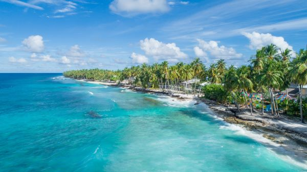

Taniti is a small, tropical island in the Pacific. While the island has an area of less than 500 square miles, the terrain is varied and includes both sandy and rocky beaches, a small but safe harbor, lush tropical rainforests, and a mountainous interior that includes a small, active volcano. Taniti has an indigenous population of about 20,000. Until a recent increase in tourism, most the Tanitian economy was dominated by fishing or agriculture.
Frequently Requested Information:
- Power outlets are 120 volts (the same as in the United States).
- Alcohol is not allowed to be served or sold between the hours of midnight and 9:00 a.m.
- The drinking age on Taniti is 18 and the drinking age is not strictly enforced.
- Many younger Tanitians speak fluent English. Very little English is spoken in rural areas, especially by the older residents.
- There is one hospital and several clinics. The hospital has many multilingual employees.
- Violent crime is very rare on Taniti, but as tourism increases, there are more reports of pickpocketing and other petty crimes.
- Taniti enjoys a large number of national holidays, and many tourist attractions and restaurants will be closed on holidays, so visitors should plan accordingly.